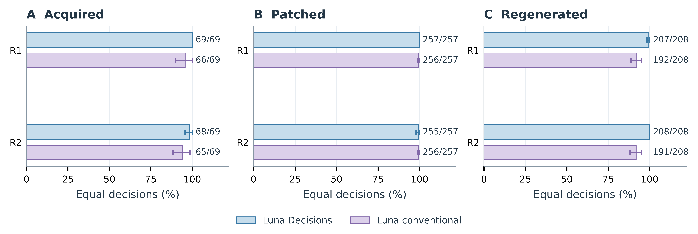
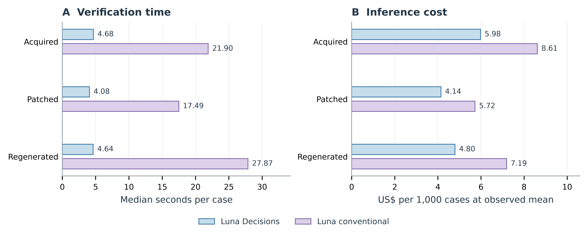

534 cases · 69 acquired · 257 patched · 208 regenerated · 70 source domains · 1,068 human judgments
Consultation and reproduction instructions · All cases CSV · Human-review instrument
Supplementary material for the MethodsX article Automated Verification of Dynamic Web Pages Using Decision Language Models for Web Accessibility Remediation.


| Case | Category | Page preparation | Generating model / reasoning | Decisions | Conventional Luna | Reviewer 1 | Reviewer 2 |
|---|---|---|---|---|---|---|---|
| Case 7 | Acquired | Acquisition | Not applicable | Admitted | Admitted | Accepted | Accepted |
| Case 80 | Patched | Minimal patches | GPT-6 Luna · Light | Admitted | Admitted | Accepted | Accepted |
| Case 81 | Patched | Minimal patches | GPT-6 Luna · High | Admitted | Admitted | Accepted | Accepted |
| Case 82 | Patched | Structural patches | GPT-6 Luna · Light | Admitted | Admitted | Accepted | Accepted |
| Case 83 | Patched | Structural patches | GPT-6 Luna · High | Admitted | Admitted | Accepted | Accepted |
| Case 99 | Patched | Minimal patches | Claude Haiku 5.5 · Light | Admitted | Admitted | Accepted | Accepted |
| Case 104 | Patched | Structural patches | Claude Haiku 5.5 · Light | Admitted | Admitted | Accepted | Accepted |
| Case 178 | Patched | Structural patches | Claude Haiku 5.5 | Admitted | Admitted | Accepted | Accepted |
| Case 84 | Regenerated | HTML regeneration | GPT-6 Luna · Light | Admitted | Rejected | Accepted | Accepted |
| Case 85 | Regenerated | HTML regeneration | GPT-6 Luna · High | Admitted | Admitted | Accepted | Accepted |
| Case 86 | Regenerated | Markdown regeneration | GPT-6 Luna · Light | Admitted | Admitted | Accepted | Accepted |
| Case 87 | Regenerated | Markdown regeneration | GPT-6 Luna · High | Admitted | Admitted | Accepted | Accepted |
| Case 109 | Regenerated | HTML regeneration | Claude Haiku 5.5 · Light | Admitted | Admitted | Accepted | Accepted |
| Case 114 | Regenerated | Markdown regeneration | Claude Haiku 5.5 · Light | Admitted | Admitted | Accepted | Accepted |
| Case | Category | Page preparation | Generating model / reasoning | Decisions | Conventional Luna | Reviewer 1 | Reviewer 2 |
|---|---|---|---|---|---|---|---|
| Case 35 | Acquired | Acquisition | Not applicable | Admitted | Admitted | Accepted | Accepted |
| Case | Category | Page preparation | Generating model / reasoning | Decisions | Conventional Luna | Reviewer 1 | Reviewer 2 |
|---|---|---|---|---|---|---|---|
| Case 532 | Acquired | Acquisition | Not applicable | Admitted | Admitted | Accepted | Accepted |
| Case | Category | Page preparation | Generating model / reasoning | Decisions | Conventional Luna | Reviewer 1 | Reviewer 2 |
|---|---|---|---|---|---|---|---|
| Case 5 | Acquired | Acquisition | Not applicable | Admitted | Admitted | Accepted | Accepted |
| Case 76 | Patched | Minimal patches | GPT-6 Luna · Light | Admitted | Admitted | Accepted | Accepted |
| Case 77 | Patched | Minimal patches | GPT-6 Luna · High | Admitted | Admitted | Accepted | Accepted |
| Case 78 | Patched | Structural patches | GPT-6 Luna · Light | Admitted | Admitted | Accepted | Accepted |
| Case 79 | Patched | Structural patches | GPT-6 Luna · High | Admitted | Admitted | Accepted | Accepted |
| Case 98 | Patched | Minimal patches | Claude Haiku 5.5 · Light | Admitted | Admitted | Accepted | Accepted |
| Case 103 | Patched | Structural patches | Claude Haiku 5.5 · Light | Admitted | Admitted | Accepted | Accepted |
| Case 177 | Patched | Structural patches | Claude Haiku 5.5 | Admitted | Admitted | Accepted | Accepted |
| Case 64 | Regenerated | HTML regeneration | GPT-6 Luna · Light | Admitted | Admitted | Accepted | Accepted |
| Case 65 | Regenerated | HTML regeneration | GPT-6 Luna · High | Admitted | Admitted | Accepted | Accepted |
| Case 66 | Regenerated | Markdown regeneration | GPT-6 Luna · Light | Rejected | Rejected | Not accepted | Not accepted |
| Case 67 | Regenerated | Markdown regeneration | GPT-6 Luna · High | Admitted | Admitted | Accepted | Accepted |
| Case 108 | Regenerated | HTML regeneration | Claude Haiku 5.5 · Light | Admitted | Admitted | Accepted | Accepted |
| Case 113 | Regenerated | Markdown regeneration | Claude Haiku 5.5 · Light | Rejected | Admitted | Not accepted | Not accepted |
| Case | Category | Page preparation | Generating model / reasoning | Decisions | Conventional Luna | Reviewer 1 | Reviewer 2 |
|---|---|---|---|---|---|---|---|
| Case 36 | Acquired | Acquisition | Not applicable | Rejected | Rejected | Not accepted | Not accepted |
| Case | Category | Page preparation | Generating model / reasoning | Decisions | Conventional Luna | Reviewer 1 | Reviewer 2 |
|---|---|---|---|---|---|---|---|
| Case 528 | Acquired | Acquisition | Not applicable | Rejected | Rejected | Not accepted | Not accepted |
| Case | Category | Page preparation | Generating model / reasoning | Decisions | Conventional Luna | Reviewer 1 | Reviewer 2 |
|---|---|---|---|---|---|---|---|
| Case 37 | Acquired | Acquisition | Not applicable | Admitted | Admitted | Accepted | Accepted |
| Case | Category | Page preparation | Generating model / reasoning | Decisions | Conventional Luna | Reviewer 1 | Reviewer 2 |
|---|---|---|---|---|---|---|---|
| Case 511 | Acquired | Acquisition | Not applicable | Admitted | Admitted | Accepted | Accepted |
| Case 466 | Patched | Minimal patches | GPT-6 Luna · High | Admitted | Admitted | Accepted | Accepted |
| Case 467 | Patched | Structural patches | GPT-6 Luna · High | Admitted | Admitted | Accepted | Accepted |
| Case 468 | Patched | Structural patches | GPT-6 Luna · High | Admitted | Admitted | Accepted | Accepted |
| Case 469 | Patched | Minimal patches | GPT-6 Luna · High | Admitted | Admitted | Accepted | Accepted |
| Case 470 | Patched | Minimal patches | GPT-6 Luna · High | Admitted | Admitted | Accepted | Accepted |
| Case 471 | Patched | Structural patches | GPT-6 Luna · High | Admitted | Admitted | Accepted | Accepted |
| Case 478 | Patched | Structural patches | GPT-6 Luna · High | Rejected | Rejected | Not accepted | Accepted |
| Case | Category | Page preparation | Generating model / reasoning | Decisions | Conventional Luna | Reviewer 1 | Reviewer 2 |
|---|---|---|---|---|---|---|---|
| Case 24 | Acquired | Acquisition | Not applicable | Admitted | Admitted | Accepted | Accepted |
| Case 326 | Patched | Minimal patches | GPT-6 Luna · Light | Admitted | Admitted | Accepted | Accepted |
| Case 327 | Patched | Minimal patches | GPT-6 Luna · High | Admitted | Admitted | Accepted | Accepted |
| Case 328 | Patched | Minimal patches | Claude Haiku 5.5 · Light | Admitted | Admitted | Accepted | Accepted |
| Case 329 | Patched | Structural patches | GPT-6 Luna · Light | Admitted | Admitted | Accepted | Accepted |
| Case 330 | Patched | Structural patches | GPT-6 Luna · High | Admitted | Admitted | Accepted | Accepted |
| Case 331 | Patched | Structural patches | Claude Haiku 5.5 · Light | Admitted | Admitted | Accepted | Accepted |
| Case 440 | Patched | Structural patches | GPT-6 Luna | Admitted | Admitted | Accepted | Accepted |
| Case 332 | Regenerated | HTML regeneration | GPT-6 Luna · Light | Admitted | Admitted | Accepted | Accepted |
| Case 333 | Regenerated | HTML regeneration | GPT-6 Luna · High | Admitted | Admitted | Accepted | Accepted |
| Case 334 | Regenerated | HTML regeneration | Claude Haiku 5.5 · Light | Admitted | Admitted | Accepted | Accepted |
| Case 335 | Regenerated | Markdown regeneration | GPT-6 Luna · Light | Admitted | Admitted | Accepted | Accepted |
| Case 336 | Regenerated | Markdown regeneration | GPT-6 Luna · High | Admitted | Admitted | Accepted | Accepted |
| Case 337 | Regenerated | Markdown regeneration | Claude Haiku 5.5 · Light | Rejected | Rejected | Not accepted | Not accepted |
| Case | Category | Page preparation | Generating model / reasoning | Decisions | Conventional Luna | Reviewer 1 | Reviewer 2 |
|---|---|---|---|---|---|---|---|
| Case 531 | Acquired | Acquisition | Not applicable | Admitted | Admitted | Accepted | Accepted |
| Case | Category | Page preparation | Generating model / reasoning | Decisions | Conventional Luna | Reviewer 1 | Reviewer 2 |
|---|---|---|---|---|---|---|---|
| Case 32 | Acquired | Acquisition | Not applicable | Admitted | Admitted | Accepted | Accepted |
| Case 386 | Patched | Minimal patches | GPT-6 Luna · Light | Admitted | Admitted | Accepted | Accepted |
| Case 387 | Patched | Minimal patches | GPT-6 Luna · High | Admitted | Admitted | Accepted | Accepted |
| Case 388 | Patched | Minimal patches | Claude Haiku 5.5 · Light | Admitted | Admitted | Accepted | Accepted |
| Case 389 | Patched | Structural patches | GPT-6 Luna · Light | Admitted | Admitted | Accepted | Accepted |
| Case 390 | Patched | Structural patches | GPT-6 Luna · High | Admitted | Admitted | Accepted | Accepted |
| Case 391 | Patched | Structural patches | Claude Haiku 5.5 · Light | Admitted | Admitted | Accepted | Accepted |
| Case 446 | Patched | Minimal patches | GPT-6 Luna · High | Admitted | Admitted | Accepted | Accepted |
| Case 392 | Regenerated | HTML regeneration | GPT-6 Luna · Light | Admitted | Admitted | Accepted | Accepted |
| Case 393 | Regenerated | HTML regeneration | GPT-6 Luna · High | Rejected | Admitted | Not accepted | Not accepted |
| Case 394 | Regenerated | HTML regeneration | Claude Haiku 5.5 · Light | Admitted | Admitted | Accepted | Accepted |
| Case 395 | Regenerated | Markdown regeneration | GPT-6 Luna · Light | Admitted | Admitted | Accepted | Accepted |
| Case 396 | Regenerated | Markdown regeneration | GPT-6 Luna · High | Rejected | Admitted | Not accepted | Not accepted |
| Case 397 | Regenerated | Markdown regeneration | Claude Haiku 5.5 · Light | Admitted | Admitted | Accepted | Accepted |
| Case | Category | Page preparation | Generating model / reasoning | Decisions | Conventional Luna | Reviewer 1 | Reviewer 2 |
|---|---|---|---|---|---|---|---|
| Case 513 | Acquired | Acquisition | Not applicable | Admitted | Admitted | Accepted | Accepted |
| Case 483 | Patched | Minimal patches | GPT-6 Luna · High | Admitted | Admitted | Accepted | Accepted |
| Case 484 | Patched | Structural patches | GPT-6 Luna · High | Admitted | Admitted | Accepted | Accepted |
| Case 485 | Patched | Structural patches | GPT-6 Luna · High | Admitted | Admitted | Accepted | Accepted |
| Case 486 | Patched | Minimal patches | GPT-6 Luna · High | Admitted | Admitted | Accepted | Accepted |
| Case 487 | Patched | Minimal patches | GPT-6 Luna · High | Admitted | Admitted | Accepted | Accepted |
| Case 488 | Patched | Structural patches | GPT-6 Luna · High | Admitted | Admitted | Accepted | Accepted |
| Case | Category | Page preparation | Generating model / reasoning | Decisions | Conventional Luna | Reviewer 1 | Reviewer 2 |
|---|---|---|---|---|---|---|---|
| Case 31 | Acquired | Acquisition | Not applicable | Admitted | Admitted | Accepted | Accepted |
| Case 350 | Patched | Minimal patches | GPT-6 Luna · High | Admitted | Admitted | Accepted | Accepted |
| Case 351 | Patched | Minimal patches | GPT-6 Luna · Light | Admitted | Admitted | Accepted | Accepted |
| Case 352 | Patched | Minimal patches | Claude Haiku 5.5 · Light | Admitted | Admitted | Accepted | Accepted |
| Case 353 | Patched | Structural patches | GPT-6 Luna · Light | Admitted | Admitted | Accepted | Accepted |
| Case 354 | Patched | Structural patches | GPT-6 Luna · High | Admitted | Admitted | Accepted | Accepted |
| Case 355 | Patched | Structural patches | Claude Haiku 5.5 · Light | Admitted | Admitted | Accepted | Accepted |
| Case 445 | Patched | Structural patches | GPT-6 Luna | Admitted | Admitted | Accepted | Accepted |
| Case 356 | Regenerated | HTML regeneration | GPT-6 Luna · Light | Rejected | Rejected | Not accepted | Not accepted |
| Case 357 | Regenerated | HTML regeneration | GPT-6 Luna · High | Rejected | Rejected | Not accepted | Not accepted |
| Case 358 | Regenerated | HTML regeneration | Claude Haiku 5.5 · Light | Admitted | Admitted | Accepted | Accepted |
| Case 359 | Regenerated | Markdown regeneration | GPT-6 Luna · Light | Rejected | Rejected | Not accepted | Not accepted |
| Case 360 | Regenerated | Markdown regeneration | GPT-6 Luna · High | Rejected | Rejected | Not accepted | Not accepted |
| Case 361 | Regenerated | Markdown regeneration | Claude Haiku 5.5 · Light | Rejected | Admitted | Not accepted | Not accepted |
| Case | Category | Page preparation | Generating model / reasoning | Decisions | Conventional Luna | Reviewer 1 | Reviewer 2 |
|---|---|---|---|---|---|---|---|
| Case 27 | Acquired | Acquisition | Not applicable | Admitted | Admitted | Accepted | Accepted |
| Case 128 | Patched | Minimal patches | GPT-6 Luna · Light | Admitted | Admitted | Accepted | Accepted |
| Case 129 | Patched | Minimal patches | GPT-6 Luna · High | Admitted | Admitted | Accepted | Accepted |
| Case 130 | Patched | Minimal patches | Claude Haiku 5.5 · Light | Admitted | Admitted | Accepted | Accepted |
| Case 131 | Patched | Structural patches | GPT-6 Luna · Light | Admitted | Admitted | Accepted | Accepted |
| Case 132 | Patched | Structural patches | GPT-6 Luna · High | Admitted | Admitted | Accepted | Accepted |
| Case 133 | Patched | Structural patches | Claude Haiku 5.5 · Light | Admitted | Admitted | Accepted | Accepted |
| Case 181 | Patched | Structural patches | GPT-6 Luna · High | Admitted | Admitted | Accepted | Accepted |
| Case 134 | Regenerated | HTML regeneration | GPT-6 Luna · Light | Admitted | Admitted | Accepted | Accepted |
| Case 135 | Regenerated | HTML regeneration | GPT-6 Luna · High | Admitted | Admitted | Accepted | Accepted |
| Case 136 | Regenerated | HTML regeneration | Claude Haiku 5.5 · Light | Admitted | Admitted | Accepted | Accepted |
| Case 137 | Regenerated | Markdown regeneration | GPT-6 Luna · Light | Admitted | Admitted | Accepted | Accepted |
| Case 138 | Regenerated | Markdown regeneration | GPT-6 Luna · High | Admitted | Admitted | Accepted | Accepted |
| Case 139 | Regenerated | Markdown regeneration | Claude Haiku 5.5 · Light | Admitted | Admitted | Accepted | Accepted |
| Case | Category | Page preparation | Generating model / reasoning | Decisions | Conventional Luna | Reviewer 1 | Reviewer 2 |
|---|---|---|---|---|---|---|---|
| Case 2 | Acquired | Acquisition | Not applicable | Admitted | Admitted | Accepted | Accepted |
| Case | Category | Page preparation | Generating model / reasoning | Decisions | Conventional Luna | Reviewer 1 | Reviewer 2 |
|---|---|---|---|---|---|---|---|
| Case 38 | Acquired | Acquisition | Not applicable | Rejected | Rejected | Not accepted | Not accepted |
| Case | Category | Page preparation | Generating model / reasoning | Decisions | Conventional Luna | Reviewer 1 | Reviewer 2 |
|---|---|---|---|---|---|---|---|
| Case 19 | Acquired | Acquisition | Not applicable | Admitted | Admitted | Accepted | Accepted |
| Case 278 | Patched | Minimal patches | GPT-6 Luna · Light | Admitted | Admitted | Accepted | Accepted |
| Case 279 | Patched | Minimal patches | GPT-6 Luna · High | Admitted | Admitted | Accepted | Accepted |
| Case 280 | Patched | Minimal patches | Claude Haiku 5.5 · Light | Admitted | Admitted | Accepted | Accepted |
| Case 281 | Patched | Structural patches | GPT-6 Luna · Light | Admitted | Admitted | Accepted | Accepted |
| Case 282 | Patched | Structural patches | GPT-6 Luna · High | Admitted | Admitted | Accepted | Accepted |
| Case 283 | Patched | Structural patches | Claude Haiku 5.5 · Light | Admitted | Admitted | Accepted | Accepted |
| Case 436 | Patched | Minimal patches | GPT-6 Luna | Rejected | Rejected | Not accepted | Not accepted |
| Case 284 | Regenerated | HTML regeneration | GPT-6 Luna · Light | Admitted | Admitted | Accepted | Accepted |
| Case 285 | Regenerated | HTML regeneration | GPT-6 Luna · High | Admitted | Admitted | Accepted | Accepted |
| Case 286 | Regenerated | HTML regeneration | Claude Haiku 5.5 · Light | Admitted | Admitted | Accepted | Accepted |
| Case 287 | Regenerated | Markdown regeneration | GPT-6 Luna · Light | Admitted | Admitted | Accepted | Accepted |
| Case 288 | Regenerated | Markdown regeneration | GPT-6 Luna · High | Admitted | Admitted | Accepted | Accepted |
| Case 289 | Regenerated | Markdown regeneration | Claude Haiku 5.5 · Light | Rejected | Admitted | Not accepted | Not accepted |
| Case | Category | Page preparation | Generating model / reasoning | Decisions | Conventional Luna | Reviewer 1 | Reviewer 2 |
|---|---|---|---|---|---|---|---|
| Case 39 | Acquired | Acquisition | Not applicable | Rejected | Rejected | Not accepted | Not accepted |
| Case | Category | Page preparation | Generating model / reasoning | Decisions | Conventional Luna | Reviewer 1 | Reviewer 2 |
|---|---|---|---|---|---|---|---|
| Case 28 | Acquired | Acquisition | Not applicable | Admitted | Admitted | Accepted | Accepted |
| Case 374 | Patched | Structural patches | GPT-6 Luna · High | Admitted | Admitted | Accepted | Accepted |
| Case 375 | Patched | Minimal patches | GPT-6 Luna · Light | Admitted | Admitted | Accepted | Accepted |
| Case 376 | Patched | Structural patches | GPT-6 Luna · Light | Admitted | Admitted | Accepted | Accepted |
| Case 377 | Patched | Minimal patches | GPT-6 Luna · High | Admitted | Admitted | Accepted | Accepted |
| Case 378 | Patched | Minimal patches | Claude Haiku 5.5 · Light | Admitted | Admitted | Accepted | Accepted |
| Case 379 | Patched | Structural patches | Claude Haiku 5.5 · Light | Admitted | Admitted | Accepted | Accepted |
| Case 443 | Patched | Minimal patches | GPT-6 Luna | Admitted | Admitted | Accepted | Accepted |
| Case 380 | Regenerated | HTML regeneration | GPT-6 Luna · Light | Rejected | Admitted | Not accepted | Not accepted |
| Case 381 | Regenerated | HTML regeneration | GPT-6 Luna · High | Admitted | Admitted | Accepted | Accepted |
| Case 382 | Regenerated | HTML regeneration | Claude Haiku 5.5 · Light | Admitted | Admitted | Accepted | Accepted |
| Case 383 | Regenerated | Markdown regeneration | GPT-6 Luna · Light | Admitted | Admitted | Accepted | Accepted |
| Case 384 | Regenerated | Markdown regeneration | GPT-6 Luna · High | Admitted | Admitted | Accepted | Accepted |
| Case 385 | Regenerated | Markdown regeneration | Claude Haiku 5.5 · Light | Admitted | Admitted | Accepted | Accepted |
| Case | Category | Page preparation | Generating model / reasoning | Decisions | Conventional Luna | Reviewer 1 | Reviewer 2 |
|---|---|---|---|---|---|---|---|
| Case 1 | Acquired | Acquisition | Not applicable | Admitted | Admitted | Accepted | Accepted |
| Case | Category | Page preparation | Generating model / reasoning | Decisions | Conventional Luna | Reviewer 1 | Reviewer 2 |
|---|---|---|---|---|---|---|---|
| Case 14 | Acquired | Acquisition | Not applicable | Admitted | Admitted | Accepted | Accepted |
| Case 242 | Patched | Minimal patches | GPT-6 Luna · Light | Admitted | Admitted | Accepted | Accepted |
| Case 243 | Patched | Minimal patches | GPT-6 Luna · High | Admitted | Admitted | Accepted | Accepted |
| Case 244 | Patched | Minimal patches | Claude Haiku 5.5 · Light | Admitted | Admitted | Accepted | Accepted |
| Case 245 | Patched | Structural patches | GPT-6 Luna · Light | Admitted | Admitted | Accepted | Accepted |
| Case 246 | Patched | Structural patches | GPT-6 Luna · High | Admitted | Admitted | Accepted | Accepted |
| Case 248 | Patched | Structural patches | Claude Haiku 5.5 · Light | Admitted | Admitted | Accepted | Accepted |
| Case 417 | Patched | Structural patches | GPT-6 Luna · High | Admitted | Admitted | Accepted | Accepted |
| Case 247 | Regenerated | HTML regeneration | GPT-6 Luna · Light | Admitted | Admitted | Accepted | Accepted |
| Case 249 | Regenerated | HTML regeneration | GPT-6 Luna · High | Rejected | Admitted | Not accepted | Not accepted |
| Case 250 | Regenerated | HTML regeneration | Claude Haiku 5.5 · Light | Admitted | Admitted | Accepted | Accepted |
| Case 251 | Regenerated | Markdown regeneration | GPT-6 Luna · Light | Admitted | Admitted | Accepted | Accepted |
| Case 252 | Regenerated | Markdown regeneration | GPT-6 Luna · High | Admitted | Admitted | Accepted | Accepted |
| Case 253 | Regenerated | Markdown regeneration | Claude Haiku 5.5 · Light | Admitted | Admitted | Accepted | Accepted |
| Case | Category | Page preparation | Generating model / reasoning | Decisions | Conventional Luna | Reviewer 1 | Reviewer 2 |
|---|---|---|---|---|---|---|---|
| Case 8 | Acquired | Acquisition | Not applicable | Admitted | Admitted | Accepted | Accepted |
| Case 187 | Patched | Minimal patches | GPT-6 Luna · Light | Admitted | Admitted | Accepted | Accepted |
| Case 188 | Patched | Minimal patches | GPT-6 Luna · High | Admitted | Admitted | Accepted | Accepted |
| Case 189 | Patched | Minimal patches | Claude Haiku 5.5 · Light | Admitted | Admitted | Accepted | Accepted |
| Case 190 | Patched | Structural patches | GPT-6 Luna · Light | Admitted | Admitted | Accepted | Accepted |
| Case 191 | Patched | Structural patches | GPT-6 Luna · High | Admitted | Admitted | Accepted | Accepted |
| Case 192 | Patched | Structural patches | Claude Haiku 5.5 · Light | Admitted | Admitted | Accepted | Accepted |
| Case 413 | Patched | Minimal patches | GPT-6 Luna · High | Admitted | Admitted | Accepted | Accepted |
| Case 193 | Regenerated | HTML regeneration | GPT-6 Luna · Light | Admitted | Admitted | Accepted | Accepted |
| Case 194 | Regenerated | HTML regeneration | GPT-6 Luna · High | Admitted | Admitted | Accepted | Accepted |
| Case 195 | Regenerated | HTML regeneration | Claude Haiku 5.5 · Light | Admitted | Rejected | Not accepted | Accepted |
| Case 196 | Regenerated | Markdown regeneration | GPT-6 Luna · Light | Admitted | Admitted | Accepted | Accepted |
| Case 197 | Regenerated | Markdown regeneration | GPT-6 Luna · High | Admitted | Admitted | Accepted | Accepted |
| Case 198 | Regenerated | Markdown regeneration | Claude Haiku 5.5 · Light | Admitted | Admitted | Accepted | Accepted |
| Case | Category | Page preparation | Generating model / reasoning | Decisions | Conventional Luna | Reviewer 1 | Reviewer 2 |
|---|---|---|---|---|---|---|---|
| Case 34 | Acquired | Acquisition | Not applicable | Admitted | Admitted | Accepted | Accepted |
| Case | Category | Page preparation | Generating model / reasoning | Decisions | Conventional Luna | Reviewer 1 | Reviewer 2 |
|---|---|---|---|---|---|---|---|
| Case 25 | Acquired | Acquisition | Not applicable | Admitted | Admitted | Accepted | Accepted |
| Case 338 | Patched | Minimal patches | GPT-6 Luna · Light | Admitted | Admitted | Accepted | Accepted |
| Case 339 | Patched | Minimal patches | GPT-6 Luna · High | Admitted | Admitted | Accepted | Accepted |
| Case 340 | Patched | Minimal patches | Claude Haiku 5.5 · Light | Admitted | Admitted | Accepted | Accepted |
| Case 341 | Patched | Structural patches | GPT-6 Luna · Light | Admitted | Admitted | Accepted | Accepted |
| Case 342 | Patched | Structural patches | GPT-6 Luna · High | Admitted | Admitted | Accepted | Accepted |
| Case 343 | Patched | Structural patches | Claude Haiku 5.5 · Light | Admitted | Admitted | Accepted | Accepted |
| Case 441 | Patched | Minimal patches | GPT-6 Luna | Admitted | Admitted | Accepted | Accepted |
| Case 344 | Regenerated | HTML regeneration | GPT-6 Luna · Light | Rejected | Rejected | Not accepted | Not accepted |
| Case 345 | Regenerated | HTML regeneration | GPT-6 Luna · High | Admitted | Admitted | Accepted | Accepted |
| Case 346 | Regenerated | HTML regeneration | Claude Haiku 5.5 · Light | Admitted | Admitted | Accepted | Accepted |
| Case 347 | Regenerated | Markdown regeneration | GPT-6 Luna · Light | Admitted | Admitted | Accepted | Accepted |
| Case 348 | Regenerated | Markdown regeneration | GPT-6 Luna · High | Admitted | Admitted | Accepted | Accepted |
| Case 349 | Regenerated | Markdown regeneration | Claude Haiku 5.5 · Light | Admitted | Admitted | Accepted | Accepted |
| Case | Category | Page preparation | Generating model / reasoning | Decisions | Conventional Luna | Reviewer 1 | Reviewer 2 |
|---|---|---|---|---|---|---|---|
| Case 4 | Acquired | Acquisition | Not applicable | Admitted | Admitted | Accepted | Accepted |
| Case | Category | Page preparation | Generating model / reasoning | Decisions | Conventional Luna | Reviewer 1 | Reviewer 2 |
|---|---|---|---|---|---|---|---|
| Case 40 | Acquired | Acquisition | Not applicable | Rejected | Rejected | Not accepted | Not accepted |
| Case | Category | Page preparation | Generating model / reasoning | Decisions | Conventional Luna | Reviewer 1 | Reviewer 2 |
|---|---|---|---|---|---|---|---|
| Case 512 | Acquired | Acquisition | Not applicable | Rejected | Admitted | Not accepted | Not accepted |
| Case 472 | Patched | Minimal patches | GPT-6 Luna · High | Admitted | Admitted | Accepted | Accepted |
| Case 473 | Patched | Structural patches | GPT-6 Luna · High | Admitted | Admitted | Accepted | Accepted |
| Case 474 | Patched | Structural patches | GPT-6 Luna · High | Admitted | Admitted | Accepted | Accepted |
| Case 475 | Patched | Minimal patches | GPT-6 Luna · High | Admitted | Admitted | Accepted | Accepted |
| Case 476 | Patched | Minimal patches | GPT-6 Luna · High | Admitted | Admitted | Accepted | Accepted |
| Case 477 | Patched | Structural patches | GPT-6 Luna · High | Admitted | Admitted | Accepted | Accepted |
| Case 479 | Patched | Minimal patches | GPT-6 Luna · High | Admitted | Admitted | Accepted | Accepted |
| Case 480 | Patched | Minimal patches | GPT-6 Luna · High | Admitted | Admitted | Accepted | Accepted |
| Case 481 | Patched | Minimal patches | GPT-6 Luna · High | Admitted | Admitted | Accepted | Accepted |
| Case 482 | Patched | Structural patches | GPT-6 Luna · High | Admitted | Admitted | Accepted | Accepted |
| Case | Category | Page preparation | Generating model / reasoning | Decisions | Conventional Luna | Reviewer 1 | Reviewer 2 |
|---|---|---|---|---|---|---|---|
| Case 41 | Acquired | Acquisition | Not applicable | Rejected | Rejected | Not accepted | Not accepted |
| Case | Category | Page preparation | Generating model / reasoning | Decisions | Conventional Luna | Reviewer 1 | Reviewer 2 |
|---|---|---|---|---|---|---|---|
| Case 42 | Acquired | Acquisition | Not applicable | Rejected | Rejected | Not accepted | Not accepted |
| Case | Category | Page preparation | Generating model / reasoning | Decisions | Conventional Luna | Reviewer 1 | Reviewer 2 |
|---|---|---|---|---|---|---|---|
| Case 509 | Acquired | Acquisition | Not applicable | Admitted | Admitted | Accepted | Accepted |
| Case 455 | Patched | Minimal patches | GPT-6 Luna · High | Admitted | Admitted | Accepted | Accepted |
| Case 456 | Patched | Structural patches | GPT-6 Luna · High | Admitted | Admitted | Accepted | Accepted |
| Case 457 | Patched | Structural patches | GPT-6 Luna · High | Admitted | Admitted | Accepted | Accepted |
| Case 458 | Patched | Minimal patches | GPT-6 Luna · High | Admitted | Admitted | Accepted | Accepted |
| Case 459 | Patched | Minimal patches | GPT-6 Luna · High | Admitted | Admitted | Accepted | Accepted |
| Case 460 | Patched | Structural patches | GPT-6 Luna · High | Admitted | Admitted | Accepted | Accepted |
| Case | Category | Page preparation | Generating model / reasoning | Decisions | Conventional Luna | Reviewer 1 | Reviewer 2 |
|---|---|---|---|---|---|---|---|
| Case 23 | Acquired | Acquisition | Not applicable | Rejected | Rejected | Not accepted | Not accepted |
| Case 314 | Patched | Minimal patches | GPT-6 Luna · Light | Admitted | Admitted | Accepted | Accepted |
| Case 315 | Patched | Minimal patches | GPT-6 Luna · High | Admitted | Admitted | Accepted | Accepted |
| Case 316 | Patched | Minimal patches | Claude Haiku 5.5 · Light | Admitted | Admitted | Accepted | Accepted |
| Case 317 | Patched | Structural patches | GPT-6 Luna · Light | Admitted | Admitted | Accepted | Accepted |
| Case 318 | Patched | Structural patches | GPT-6 Luna · High | Admitted | Admitted | Accepted | Accepted |
| Case 319 | Patched | Structural patches | Claude Haiku 5.5 · Light | Admitted | Admitted | Accepted | Accepted |
| Case 439 | Patched | Structural patches | GPT-6 Luna | Admitted | Admitted | Accepted | Accepted |
| Case 320 | Regenerated | HTML regeneration | GPT-6 Luna · Light | Admitted | Admitted | Accepted | Accepted |
| Case 321 | Regenerated | HTML regeneration | GPT-6 Luna · High | Admitted | Admitted | Accepted | Accepted |
| Case 322 | Regenerated | HTML regeneration | Claude Haiku 5.5 · Light | Rejected | Admitted | Not accepted | Not accepted |
| Case 323 | Regenerated | Markdown regeneration | GPT-6 Luna · Light | Admitted | Admitted | Accepted | Accepted |
| Case 324 | Regenerated | Markdown regeneration | GPT-6 Luna · High | Rejected | Admitted | Not accepted | Not accepted |
| Case 325 | Regenerated | Markdown regeneration | Claude Haiku 5.5 · Light | Admitted | Admitted | Accepted | Accepted |
| Case | Category | Page preparation | Generating model / reasoning | Decisions | Conventional Luna | Reviewer 1 | Reviewer 2 |
|---|---|---|---|---|---|---|---|
| Case 6 | Acquired | Acquisition | Not applicable | Admitted | Admitted | Accepted | Accepted |
| Case 56 | Patched | Minimal patches | GPT-6 Luna · Light | Admitted | Admitted | Accepted | Accepted |
| Case 57 | Patched | Minimal patches | GPT-6 Luna · High | Admitted | Admitted | Accepted | Accepted |
| Case 58 | Patched | Structural patches | GPT-6 Luna · Light | Admitted | Admitted | Accepted | Accepted |
| Case 59 | Patched | Structural patches | GPT-6 Luna · High | Admitted | Admitted | Accepted | Accepted |
| Case 96 | Patched | Minimal patches | Claude Haiku 5.5 · Light | Admitted | Admitted | Accepted | Accepted |
| Case 101 | Patched | Structural patches | Claude Haiku 5.5 · Light | Admitted | Admitted | Accepted | Accepted |
| Case 176 | Patched | Minimal patches | GPT-6 Luna · High | Admitted | Admitted | Accepted | Accepted |
| Case 60 | Regenerated | HTML regeneration | GPT-6 Luna · Light | Admitted | Admitted | Accepted | Accepted |
| Case 61 | Regenerated | HTML regeneration | GPT-6 Luna · High | Admitted | Admitted | Accepted | Accepted |
| Case 62 | Regenerated | Markdown regeneration | GPT-6 Luna · Light | Admitted | Admitted | Accepted | Accepted |
| Case 63 | Regenerated | Markdown regeneration | GPT-6 Luna · High | Admitted | Admitted | Accepted | Accepted |
| Case 106 | Regenerated | HTML regeneration | Claude Haiku 5.5 · Light | Admitted | Admitted | Accepted | Accepted |
| Case 111 | Regenerated | Markdown regeneration | Claude Haiku 5.5 · Light | Admitted | Admitted | Accepted | Accepted |
| Case | Category | Page preparation | Generating model / reasoning | Decisions | Conventional Luna | Reviewer 1 | Reviewer 2 |
|---|---|---|---|---|---|---|---|
| Case 21 | Acquired | Acquisition | Not applicable | Admitted | Admitted | Accepted | Accepted |
| Case 290 | Patched | Minimal patches | GPT-6 Luna · Light | Admitted | Admitted | Accepted | Accepted |
| Case 291 | Patched | Minimal patches | GPT-6 Luna · High | Admitted | Admitted | Accepted | Accepted |
| Case 292 | Patched | Minimal patches | Claude Haiku 5.5 · Light | Admitted | Admitted | Accepted | Accepted |
| Case 293 | Patched | Structural patches | GPT-6 Luna · Light | Admitted | Admitted | Accepted | Accepted |
| Case 294 | Patched | Structural patches | GPT-6 Luna · High | Admitted | Admitted | Accepted | Accepted |
| Case 295 | Patched | Structural patches | Claude Haiku 5.5 · Light | Admitted | Admitted | Accepted | Accepted |
| Case 438 | Patched | Minimal + structural patches | GPT-6 Luna · High / GPT-6 Luna | Admitted | Admitted | Accepted | Accepted |
| Case 296 | Regenerated | HTML regeneration | GPT-6 Luna · Light | Admitted | Admitted | Accepted | Accepted |
| Case 297 | Regenerated | HTML regeneration | GPT-6 Luna · High | Admitted | Admitted | Accepted | Accepted |
| Case 298 | Regenerated | HTML regeneration | Claude Haiku 5.5 · Light | Rejected | Rejected | Not accepted | Not accepted |
| Case 299 | Regenerated | Markdown regeneration | GPT-6 Luna · Light | Admitted | Admitted | Accepted | Accepted |
| Case 300 | Regenerated | Markdown regeneration | GPT-6 Luna · High | Admitted | Admitted | Accepted | Accepted |
| Case 301 | Regenerated | Markdown regeneration | Claude Haiku 5.5 · Light | Admitted | Admitted | Accepted | Accepted |
| Case | Category | Page preparation | Generating model / reasoning | Decisions | Conventional Luna | Reviewer 1 | Reviewer 2 |
|---|---|---|---|---|---|---|---|
| Case 26 | Acquired | Acquisition | Not applicable | Admitted | Admitted | Accepted | Accepted |
| Case 362 | Patched | Minimal patches | GPT-6 Luna · Light | Admitted | Admitted | Accepted | Accepted |
| Case 363 | Patched | Minimal patches | GPT-6 Luna · High | Admitted | Admitted | Accepted | Accepted |
| Case 364 | Patched | Minimal patches | Claude Haiku 5.5 · Light | Admitted | Admitted | Accepted | Accepted |
| Case 365 | Patched | Structural patches | GPT-6 Luna · Light | Admitted | Admitted | Accepted | Accepted |
| Case 366 | Patched | Structural patches | GPT-6 Luna · High | Admitted | Admitted | Accepted | Accepted |
| Case 367 | Patched | Structural patches | Claude Haiku 5.5 · Light | Admitted | Admitted | Accepted | Accepted |
| Case 442 | Patched | Structural patches | GPT-6 Luna | Admitted | Admitted | Accepted | Accepted |
| Case 368 | Regenerated | HTML regeneration | GPT-6 Luna · Light | Admitted | Admitted | Accepted | Accepted |
| Case 369 | Regenerated | HTML regeneration | GPT-6 Luna · High | Admitted | Admitted | Accepted | Accepted |
| Case 370 | Regenerated | HTML regeneration | Claude Haiku 5.5 · Light | Admitted | Admitted | Accepted | Accepted |
| Case 371 | Regenerated | Markdown regeneration | GPT-6 Luna · Light | Admitted | Admitted | Accepted | Accepted |
| Case 372 | Regenerated | Markdown regeneration | GPT-6 Luna · High | Admitted | Admitted | Accepted | Accepted |
| Case 373 | Regenerated | Markdown regeneration | Claude Haiku 5.5 · Light | Admitted | Admitted | Accepted | Accepted |
| Case | Category | Page preparation | Generating model / reasoning | Decisions | Conventional Luna | Reviewer 1 | Reviewer 2 |
|---|---|---|---|---|---|---|---|
| Case 13 | Acquired | Acquisition | Not applicable | Admitted | Admitted | Accepted | Accepted |
| Case 230 | Patched | Minimal patches | GPT-6 Luna · Light | Admitted | Admitted | Accepted | Accepted |
| Case 231 | Patched | Minimal patches | GPT-6 Luna · High | Admitted | Admitted | Accepted | Accepted |
| Case 232 | Patched | Minimal patches | Claude Haiku 5.5 · Light | Admitted | Admitted | Accepted | Accepted |
| Case 233 | Patched | Structural patches | GPT-6 Luna · Light | Admitted | Admitted | Accepted | Accepted |
| Case 234 | Patched | Structural patches | GPT-6 Luna · High | Admitted | Admitted | Accepted | Accepted |
| Case 235 | Patched | Structural patches | Claude Haiku 5.5 · Light | Admitted | Admitted | Accepted | Accepted |
| Case 416 | Patched | Minimal + structural patches | GPT-6 Luna · High | Admitted | Admitted | Accepted | Accepted |
| Case 236 | Regenerated | HTML regeneration | GPT-6 Luna · Light | Rejected | Admitted | Not accepted | Not accepted |
| Case 237 | Regenerated | HTML regeneration | GPT-6 Luna · High | Rejected | Rejected | Not accepted | Not accepted |
| Case 238 | Regenerated | HTML regeneration | Claude Haiku 5.5 · Light | Admitted | Admitted | Accepted | Accepted |
| Case 239 | Regenerated | Markdown regeneration | GPT-6 Luna · Light | Admitted | Admitted | Accepted | Accepted |
| Case 240 | Regenerated | Markdown regeneration | GPT-6 Luna · High | Admitted | Admitted | Accepted | Accepted |
| Case 241 | Regenerated | Markdown regeneration | Claude Haiku 5.5 · Light | Admitted | Admitted | Accepted | Accepted |
| Case | Category | Page preparation | Generating model / reasoning | Decisions | Conventional Luna | Reviewer 1 | Reviewer 2 |
|---|---|---|---|---|---|---|---|
| Case 534 | Acquired | Acquisition | Not applicable | Admitted | Admitted | Accepted | Accepted |
| Case | Category | Page preparation | Generating model / reasoning | Decisions | Conventional Luna | Reviewer 1 | Reviewer 2 |
|---|---|---|---|---|---|---|---|
| Case 29 | Acquired | Acquisition | Not applicable | Admitted | Admitted | Accepted | Accepted |
| Case 164 | Patched | Minimal patches | GPT-6 Luna · Light | Admitted | Admitted | Accepted | Accepted |
| Case 165 | Patched | Minimal patches | GPT-6 Luna · High | Admitted | Admitted | Accepted | Accepted |
| Case 166 | Patched | Minimal patches | Claude Haiku 5.5 · Light | Admitted | Admitted | Accepted | Accepted |
| Case 167 | Patched | Structural patches | GPT-6 Luna · Light | Admitted | Admitted | Accepted | Accepted |
| Case 168 | Patched | Structural patches | GPT-6 Luna · High | Admitted | Admitted | Accepted | Accepted |
| Case 169 | Patched | Structural patches | Claude Haiku 5.5 · Light | Admitted | Admitted | Accepted | Accepted |
| Case 444 | Patched | Structural patches | GPT-6 Luna · High / GPT-6 Luna | Admitted | Admitted | Accepted | Accepted |
| Case 170 | Regenerated | HTML regeneration | GPT-6 Luna · Light | Admitted | Admitted | Accepted | Accepted |
| Case 171 | Regenerated | HTML regeneration | GPT-6 Luna · High | Admitted | Admitted | Accepted | Accepted |
| Case 172 | Regenerated | HTML regeneration | Claude Haiku 5.5 · Light | Admitted | Admitted | Accepted | Accepted |
| Case 173 | Regenerated | Markdown regeneration | GPT-6 Luna · Light | Admitted | Admitted | Accepted | Accepted |
| Case 174 | Regenerated | Markdown regeneration | GPT-6 Luna · High | Admitted | Admitted | Accepted | Accepted |
| Case 175 | Regenerated | Markdown regeneration | Claude Haiku 5.5 · Light | Admitted | Admitted | Accepted | Accepted |
| Case | Category | Page preparation | Generating model / reasoning | Decisions | Conventional Luna | Reviewer 1 | Reviewer 2 |
|---|---|---|---|---|---|---|---|
| Case 10 | Acquired | Acquisition | Not applicable | Admitted | Admitted | Accepted | Accepted |
| Case 140 | Patched | Minimal patches | GPT-6 Luna · Light | Admitted | Admitted | Accepted | Accepted |
| Case 141 | Patched | Minimal patches | GPT-6 Luna · High | Admitted | Admitted | Accepted | Accepted |
| Case 142 | Patched | Minimal patches | Claude Haiku 5.5 · Light | Admitted | Admitted | Accepted | Accepted |
| Case 143 | Patched | Structural patches | GPT-6 Luna · Light | Admitted | Admitted | Accepted | Accepted |
| Case 144 | Patched | Structural patches | GPT-6 Luna · High | Admitted | Admitted | Accepted | Accepted |
| Case 145 | Patched | Structural patches | Claude Haiku 5.5 · Light | Admitted | Admitted | Accepted | Accepted |
| Case 410 | Patched | Structural patches | GPT-6 Luna | Admitted | Admitted | Accepted | Accepted |
| Case 146 | Regenerated | HTML regeneration | GPT-6 Luna · Light | Admitted | Admitted | Accepted | Accepted |
| Case 147 | Regenerated | HTML regeneration | GPT-6 Luna · High | Admitted | Admitted | Accepted | Accepted |
| Case 148 | Regenerated | HTML regeneration | Claude Haiku 5.5 · Light | Admitted | Admitted | Accepted | Accepted |
| Case 149 | Regenerated | Markdown regeneration | GPT-6 Luna · Light | Admitted | Admitted | Accepted | Accepted |
| Case 150 | Regenerated | Markdown regeneration | GPT-6 Luna · High | Admitted | Admitted | Accepted | Accepted |
| Case 151 | Regenerated | Markdown regeneration | Claude Haiku 5.5 · Light | Admitted | Admitted | Accepted | Accepted |
| Case | Category | Page preparation | Generating model / reasoning | Decisions | Conventional Luna | Reviewer 1 | Reviewer 2 |
|---|---|---|---|---|---|---|---|
| Case 44 | Acquired | Acquisition | Not applicable | Admitted | Admitted | Accepted | Accepted |
| Case | Category | Page preparation | Generating model / reasoning | Decisions | Conventional Luna | Reviewer 1 | Reviewer 2 |
|---|---|---|---|---|---|---|---|
| Case 45 | Acquired | Acquisition | Not applicable | Rejected | Rejected | Not accepted | Not accepted |
| Case | Category | Page preparation | Generating model / reasoning | Decisions | Conventional Luna | Reviewer 1 | Reviewer 2 |
|---|---|---|---|---|---|---|---|
| Case 16 | Acquired | Acquisition | Not applicable | Admitted | Admitted | Accepted | Accepted |
| Case 116 | Patched | Minimal patches | GPT-6 Luna · Light | Admitted | Admitted | Accepted | Accepted |
| Case 117 | Patched | Minimal patches | GPT-6 Luna · High | Admitted | Admitted | Accepted | Accepted |
| Case 118 | Patched | Minimal patches | Claude Haiku 5.5 · Light | Admitted | Admitted | Accepted | Accepted |
| Case 119 | Patched | Structural patches | GPT-6 Luna · Light | Admitted | Admitted | Accepted | Accepted |
| Case 120 | Patched | Structural patches | GPT-6 Luna · High | Admitted | Admitted | Accepted | Accepted |
| Case 121 | Patched | Structural patches | Claude Haiku 5.5 · Light | Admitted | Admitted | Accepted | Accepted |
| Case 419 | Patched | Minimal + structural patches | GPT-6 Luna | Admitted | Admitted | Accepted | Accepted |
| Case 122 | Regenerated | HTML regeneration | GPT-6 Luna · Light | Admitted | Admitted | Accepted | Accepted |
| Case 123 | Regenerated | HTML regeneration | GPT-6 Luna · High | Admitted | Admitted | Accepted | Accepted |
| Case 124 | Regenerated | HTML regeneration | Claude Haiku 5.5 · Light | Admitted | Admitted | Accepted | Accepted |
| Case 125 | Regenerated | Markdown regeneration | GPT-6 Luna · Light | Admitted | Admitted | Accepted | Accepted |
| Case 126 | Regenerated | Markdown regeneration | GPT-6 Luna · High | Admitted | Admitted | Accepted | Accepted |
| Case 127 | Regenerated | Markdown regeneration | Claude Haiku 5.5 · Light | Admitted | Admitted | Accepted | Accepted |
| Case | Category | Page preparation | Generating model / reasoning | Decisions | Conventional Luna | Reviewer 1 | Reviewer 2 |
|---|---|---|---|---|---|---|---|
| Case 46 | Acquired | Acquisition | Not applicable | Rejected | Rejected | Not accepted | Not accepted |
| Case | Category | Page preparation | Generating model / reasoning | Decisions | Conventional Luna | Reviewer 1 | Reviewer 2 |
|---|---|---|---|---|---|---|---|
| Case 508 | Acquired | Acquisition | Not applicable | Admitted | Admitted | Accepted | Accepted |
| Case 449 | Patched | Minimal patches | GPT-6 Luna · High | Admitted | Admitted | Accepted | Accepted |
| Case 450 | Patched | Structural patches | GPT-6 Luna · High | Admitted | Admitted | Accepted | Accepted |
| Case 451 | Patched | Structural patches | GPT-6 Luna · High | Admitted | Rejected | Accepted | Not accepted |
| Case 452 | Patched | Minimal patches | GPT-6 Luna · High | Admitted | Admitted | Accepted | Accepted |
| Case 453 | Patched | Minimal patches | GPT-6 Luna · High | Admitted | Admitted | Accepted | Accepted |
| Case 454 | Patched | Structural patches | GPT-6 Luna · High | Admitted | Admitted | Accepted | Accepted |
| Case | Category | Page preparation | Generating model / reasoning | Decisions | Conventional Luna | Reviewer 1 | Reviewer 2 |
|---|---|---|---|---|---|---|---|
| Case 47 | Acquired | Acquisition | Not applicable | Rejected | Rejected | Not accepted | Not accepted |
| Case | Category | Page preparation | Generating model / reasoning | Decisions | Conventional Luna | Reviewer 1 | Reviewer 2 |
|---|---|---|---|---|---|---|---|
| Case 529 | Acquired | Acquisition | Not applicable | Rejected | Rejected | Not accepted | Not accepted |
| Case | Category | Page preparation | Generating model / reasoning | Decisions | Conventional Luna | Reviewer 1 | Reviewer 2 |
|---|---|---|---|---|---|---|---|
| Case 20 | Acquired | Acquisition | Not applicable | Admitted | Admitted | Accepted | Accepted |
| Case 152 | Patched | Minimal patches | GPT-6 Luna · Light | Admitted | Admitted | Accepted | Accepted |
| Case 153 | Patched | Minimal patches | GPT-6 Luna · High | Admitted | Admitted | Accepted | Accepted |
| Case 154 | Patched | Minimal patches | Claude Haiku 5.5 · Light | Admitted | Admitted | Accepted | Accepted |
| Case 155 | Patched | Structural patches | GPT-6 Luna · Light | Admitted | Admitted | Accepted | Accepted |
| Case 156 | Patched | Structural patches | GPT-6 Luna · High | Admitted | Admitted | Accepted | Accepted |
| Case 157 | Patched | Structural patches | Claude Haiku 5.5 · Light | Admitted | Admitted | Accepted | Accepted |
| Case 437 | Patched | Minimal + structural patches | GPT-6 Luna | Admitted | Admitted | Accepted | Accepted |
| Case 158 | Regenerated | HTML regeneration | GPT-6 Luna · Light | Admitted | Admitted | Accepted | Accepted |
| Case 159 | Regenerated | HTML regeneration | GPT-6 Luna · High | Admitted | Admitted | Accepted | Accepted |
| Case 160 | Regenerated | HTML regeneration | Claude Haiku 5.5 · Light | Admitted | Admitted | Accepted | Accepted |
| Case 161 | Regenerated | Markdown regeneration | GPT-6 Luna · Light | Admitted | Admitted | Accepted | Accepted |
| Case 162 | Regenerated | Markdown regeneration | GPT-6 Luna · High | Admitted | Admitted | Accepted | Accepted |
| Case 163 | Regenerated | Markdown regeneration | Claude Haiku 5.5 · Light | Admitted | Admitted | Accepted | Accepted |
| Case | Category | Page preparation | Generating model / reasoning | Decisions | Conventional Luna | Reviewer 1 | Reviewer 2 |
|---|---|---|---|---|---|---|---|
| Case 18 | Acquired | Acquisition | Not applicable | Admitted | Admitted | Accepted | Accepted |
| Case 266 | Patched | Minimal patches | GPT-6 Luna · Light | Admitted | Admitted | Accepted | Accepted |
| Case 267 | Patched | Minimal patches | GPT-6 Luna · High | Admitted | Admitted | Accepted | Accepted |
| Case 268 | Patched | Minimal patches | Claude Haiku 5.5 · Light | Admitted | Admitted | Accepted | Accepted |
| Case 269 | Patched | Structural patches | GPT-6 Luna · Light | Admitted | Admitted | Accepted | Accepted |
| Case 270 | Patched | Structural patches | GPT-6 Luna · High | Admitted | Admitted | Accepted | Accepted |
| Case 271 | Patched | Structural patches | Claude Haiku 5.5 · Light | Admitted | Admitted | Accepted | Accepted |
| Case 420 | Patched | Minimal patches | GPT-6 Luna · High | Admitted | Admitted | Accepted | Accepted |
| Case 272 | Regenerated | HTML regeneration | GPT-6 Luna · Light | Admitted | Admitted | Accepted | Accepted |
| Case 273 | Regenerated | HTML regeneration | GPT-6 Luna · High | Admitted | Admitted | Accepted | Accepted |
| Case 274 | Regenerated | Markdown regeneration | GPT-6 Luna · Light | Admitted | Admitted | Accepted | Accepted |
| Case 275 | Regenerated | HTML regeneration | Claude Haiku 5.5 · Light | Admitted | Admitted | Accepted | Accepted |
| Case 276 | Regenerated | Markdown regeneration | GPT-6 Luna · High | Admitted | Admitted | Accepted | Accepted |
| Case 277 | Regenerated | Markdown regeneration | Claude Haiku 5.5 · Light | Admitted | Admitted | Accepted | Accepted |
| Case | Category | Page preparation | Generating model / reasoning | Decisions | Conventional Luna | Reviewer 1 | Reviewer 2 |
|---|---|---|---|---|---|---|---|
| Case 48 | Acquired | Acquisition | Not applicable | Rejected | Rejected | Not accepted | Not accepted |
| Case | Category | Page preparation | Generating model / reasoning | Decisions | Conventional Luna | Reviewer 1 | Reviewer 2 |
|---|---|---|---|---|---|---|---|
| Case 49 | Acquired | Acquisition | Not applicable | Admitted | Admitted | Accepted | Accepted |
| Case | Category | Page preparation | Generating model / reasoning | Decisions | Conventional Luna | Reviewer 1 | Reviewer 2 |
|---|---|---|---|---|---|---|---|
| Case 43 | Acquired | Acquisition | Not applicable | Admitted | Admitted | Accepted | Accepted |
| Case | Category | Page preparation | Generating model / reasoning | Decisions | Conventional Luna | Reviewer 1 | Reviewer 2 |
|---|---|---|---|---|---|---|---|
| Case 11 | Acquired | Acquisition | Not applicable | Admitted | Admitted | Accepted | Accepted |
| Case 182 | Patched | Minimal patches | GPT-6 Luna · Light | Admitted | Admitted | Accepted | Accepted |
| Case 183 | Patched | Minimal patches | GPT-6 Luna · High | Admitted | Admitted | Accepted | Accepted |
| Case 184 | Patched | Minimal patches | Claude Haiku 5.5 · Light | Admitted | Admitted | Accepted | Accepted |
| Case 185 | Patched | Structural patches | GPT-6 Luna · Light | Admitted | Admitted | Accepted | Accepted |
| Case 186 | Patched | Structural patches | GPT-6 Luna · High | Admitted | Admitted | Accepted | Accepted |
| Case 211 | Patched | Structural patches | Claude Haiku 5.5 · Light | Admitted | Admitted | Accepted | Accepted |
| Case 411 | Patched | Structural patches | GPT-6 Luna · High | Admitted | Admitted | Accepted | Accepted |
| Case 212 | Regenerated | HTML regeneration | GPT-6 Luna · Light | Admitted | Admitted | Accepted | Accepted |
| Case 213 | Regenerated | HTML regeneration | GPT-6 Luna · High | Admitted | Admitted | Accepted | Accepted |
| Case 214 | Regenerated | HTML regeneration | Claude Haiku 5.5 · Light | Admitted | Admitted | Accepted | Accepted |
| Case 215 | Regenerated | Markdown regeneration | GPT-6 Luna · Light | Admitted | Admitted | Accepted | Accepted |
| Case 216 | Regenerated | Markdown regeneration | GPT-6 Luna · High | Admitted | Admitted | Accepted | Accepted |
| Case 217 | Regenerated | Markdown regeneration | Claude Haiku 5.5 · Light | Admitted | Admitted | Accepted | Accepted |
| Case | Category | Page preparation | Generating model / reasoning | Decisions | Conventional Luna | Reviewer 1 | Reviewer 2 |
|---|---|---|---|---|---|---|---|
| Case 3 | Acquired | Acquisition | Not applicable | Admitted | Admitted | Accepted | Accepted |
| Case | Category | Page preparation | Generating model / reasoning | Decisions | Conventional Luna | Reviewer 1 | Reviewer 2 |
|---|---|---|---|---|---|---|---|
| Case 50 | Acquired | Acquisition | Not applicable | Rejected | Admitted | Not accepted | Not accepted |
| Case | Category | Page preparation | Generating model / reasoning | Decisions | Conventional Luna | Reviewer 1 | Reviewer 2 |
|---|---|---|---|---|---|---|---|
| Case 51 | Acquired | Acquisition | Not applicable | Admitted | Admitted | Accepted | Accepted |
| Case | Category | Page preparation | Generating model / reasoning | Decisions | Conventional Luna | Reviewer 1 | Reviewer 2 |
|---|---|---|---|---|---|---|---|
| Case 17 | Acquired | Acquisition | Not applicable | Rejected | Rejected | Not accepted | Accepted |
| Case 68 | Patched | Minimal patches | GPT-6 Luna · Light | Rejected | Rejected | Not accepted | Not accepted |
| Case 69 | Patched | Minimal patches | GPT-6 Luna · High | Rejected | Rejected | Not accepted | Not accepted |
| Case 70 | Patched | Structural patches | GPT-6 Luna · Light | Rejected | Rejected | Not accepted | Not accepted |
| Case 71 | Patched | Structural patches | GPT-6 Luna · High | Rejected | Rejected | Not accepted | Not accepted |
| Case 97 | Patched | Minimal patches | Claude Haiku 5.5 · Light | Rejected | Rejected | Not accepted | Not accepted |
| Case 102 | Patched | Structural patches | Claude Haiku 5.5 · Light | Rejected | Rejected | Not accepted | Not accepted |
| Case 180 | Patched | Structural patches | Claude Haiku 5.5 | Rejected | Rejected | Not accepted | Not accepted |
| Case 72 | Regenerated | HTML regeneration | GPT-6 Luna · Light | Admitted | Admitted | Accepted | Accepted |
| Case 73 | Regenerated | HTML regeneration | GPT-6 Luna · High | Rejected | Rejected | Not accepted | Not accepted |
| Case 74 | Regenerated | Markdown regeneration | GPT-6 Luna · Light | Admitted | Admitted | Accepted | Accepted |
| Case 75 | Regenerated | Markdown regeneration | GPT-6 Luna · High | Admitted | Admitted | Accepted | Accepted |
| Case 107 | Regenerated | HTML regeneration | Claude Haiku 5.5 · Light | Admitted | Admitted | Accepted | Accepted |
| Case 112 | Regenerated | Markdown regeneration | Claude Haiku 5.5 · Light | Rejected | Admitted | Not accepted | Not accepted |
| Case | Category | Page preparation | Generating model / reasoning | Decisions | Conventional Luna | Reviewer 1 | Reviewer 2 |
|---|---|---|---|---|---|---|---|
| Case 33 | Acquired | Acquisition | Not applicable | Admitted | Admitted | Accepted | Accepted |
| Case 398 | Patched | Minimal patches | GPT-6 Luna · Light | Admitted | Admitted | Accepted | Accepted |
| Case 399 | Patched | Minimal patches | GPT-6 Luna · High | Admitted | Admitted | Accepted | Accepted |
| Case 400 | Patched | Minimal patches | Claude Haiku 5.5 · Light | Admitted | Admitted | Accepted | Accepted |
| Case 401 | Patched | Structural patches | GPT-6 Luna · Light | Admitted | Admitted | Accepted | Accepted |
| Case 402 | Patched | Structural patches | GPT-6 Luna · High | Admitted | Admitted | Accepted | Accepted |
| Case 403 | Patched | Structural patches | Claude Haiku 5.5 · Light | Admitted | Admitted | Accepted | Accepted |
| Case 447 | Patched | Structural patches | GPT-6 Luna · High | Admitted | Admitted | Accepted | Accepted |
| Case 404 | Regenerated | HTML regeneration | GPT-6 Luna · Light | Admitted | Admitted | Accepted | Accepted |
| Case 405 | Regenerated | HTML regeneration | GPT-6 Luna · High | Admitted | Admitted | Accepted | Accepted |
| Case 406 | Regenerated | HTML regeneration | Claude Haiku 5.5 · Light | Admitted | Admitted | Accepted | Accepted |
| Case 407 | Regenerated | Markdown regeneration | GPT-6 Luna · Light | Admitted | Admitted | Accepted | Accepted |
| Case 408 | Regenerated | Markdown regeneration | GPT-6 Luna · High | Admitted | Admitted | Accepted | Accepted |
| Case 409 | Regenerated | Markdown regeneration | Claude Haiku 5.5 · Light | Admitted | Admitted | Accepted | Accepted |
| Case | Category | Page preparation | Generating model / reasoning | Decisions | Conventional Luna | Reviewer 1 | Reviewer 2 |
|---|---|---|---|---|---|---|---|
| Case 30 | Acquired | Acquisition | Not applicable | Admitted | Admitted | Accepted | Accepted |
| Case 88 | Patched | Minimal patches | GPT-6 Luna · Light | Admitted | Admitted | Accepted | Accepted |
| Case 89 | Patched | Minimal patches | GPT-6 Luna · High | Admitted | Admitted | Accepted | Accepted |
| Case 90 | Patched | Structural patches | GPT-6 Luna · Light | Admitted | Admitted | Accepted | Accepted |
| Case 91 | Patched | Structural patches | GPT-6 Luna · High | Admitted | Admitted | Accepted | Accepted |
| Case 100 | Patched | Minimal patches | Claude Haiku 5.5 · Light | Admitted | Admitted | Accepted | Accepted |
| Case 105 | Patched | Structural patches | Claude Haiku 5.5 · Light | Admitted | Admitted | Accepted | Accepted |
| Case 179 | Patched | Minimal patches | GPT-6 Luna · High | Admitted | Admitted | Accepted | Accepted |
| Case 92 | Regenerated | HTML regeneration | GPT-6 Luna · Light | Admitted | Admitted | Accepted | Accepted |
| Case 93 | Regenerated | HTML regeneration | GPT-6 Luna · High | Rejected | Admitted | Not accepted | Not accepted |
| Case 94 | Regenerated | Markdown regeneration | GPT-6 Luna · Light | Admitted | Admitted | Accepted | Accepted |
| Case 95 | Regenerated | Markdown regeneration | GPT-6 Luna · High | Admitted | Admitted | Accepted | Accepted |
| Case 110 | Regenerated | HTML regeneration | Claude Haiku 5.5 · Light | Admitted | Admitted | Accepted | Accepted |
| Case 115 | Regenerated | Markdown regeneration | Claude Haiku 5.5 · Light | Admitted | Admitted | Accepted | Accepted |
| Case 421 | Regenerated | Markdown regeneration | Claude Opus 5.5 · Light | Admitted | Admitted | Accepted | Accepted |
| Case 422 | Regenerated | Markdown regeneration | GPT-6 Astra · Light | Admitted | Admitted | Accepted | Accepted |
| Case 423 | Regenerated | Markdown regeneration | GPT-6.1 Sol · Light | Admitted | Admitted | Accepted | Accepted |
| Case 489 | Regenerated | Markdown regeneration | Claude Haiku 5.5 · High | Admitted | Admitted | Accepted | Accepted |
| Case 490 | Regenerated | Markdown regeneration | GPT-6.1 Sol · High | Admitted | Admitted | Accepted | Accepted |
| Case 491 | Regenerated | Markdown regeneration | GPT-6 Luna · Medium | Admitted | Admitted | Accepted | Accepted |
| Case 492 | Regenerated | Markdown regeneration | GPT-6 Luna · Xhigh | Rejected | Admitted | Not accepted | Not accepted |
| Case 493 | Regenerated | Markdown regeneration | GPT-6 Astra · High | Admitted | Admitted | Accepted | Accepted |
| Case 494 | Regenerated | Markdown regeneration | Claude Opus 5.5 · High | Admitted | Admitted | Accepted | Accepted |
| Case 495 | Regenerated | Markdown regeneration | Claude Sonnet 5.5 · Light | Admitted | Admitted | Accepted | Accepted |
| Case 496 | Regenerated | Markdown regeneration | Claude Sonnet 5.5 · High | Admitted | Admitted | Accepted | Accepted |
| Case 497 | Regenerated | Markdown regeneration | GPT-6 Astra · Light | Admitted | Admitted | Accepted | Accepted |
| Case 498 | Regenerated | Markdown regeneration | GPT-6 Astra · High | Admitted | Admitted | Accepted | Accepted |
| Case 499 | Regenerated | Markdown regeneration | Claude Opus 5.5 · Light | Admitted | Admitted | Accepted | Accepted |
| Case 500 | Regenerated | Markdown regeneration | Claude Sonnet 5.5 · Light | Admitted | Admitted | Accepted | Accepted |
| Case 501 | Regenerated | Markdown regeneration | Claude Sonnet 5.5 · High | Admitted | Admitted | Accepted | Accepted |
| Case 502 | Regenerated | Markdown regeneration | GPT-6.1 Sol · Light | Admitted | Admitted | Accepted | Accepted |
| Case 503 | Regenerated | Markdown regeneration | GPT-6.1 Sol · High | Admitted | Admitted | Accepted | Accepted |
| Case 504 | Regenerated | Markdown regeneration | GPT-6 Luna · Light | Admitted | Admitted | Accepted | Accepted |
| Case 505 | Regenerated | Markdown regeneration | GPT-6 Luna · High | Admitted | Admitted | Accepted | Accepted |
| Case 506 | Regenerated | Markdown regeneration | Claude Haiku 5.5 · Light | Admitted | Admitted | Accepted | Accepted |
| Case 507 | Regenerated | Markdown regeneration | Claude Haiku 5.5 · High | Admitted | Admitted | Accepted | Accepted |
| Case | Category | Page preparation | Generating model / reasoning | Decisions | Conventional Luna | Reviewer 1 | Reviewer 2 |
|---|---|---|---|---|---|---|---|
| Case 22 | Acquired | Acquisition | Not applicable | Admitted | Admitted | Accepted | Accepted |
| Case 302 | Patched | Minimal patches | GPT-6 Luna · Light | Admitted | Admitted | Accepted | Accepted |
| Case 303 | Patched | Minimal patches | GPT-6 Luna · High | Admitted | Admitted | Accepted | Accepted |
| Case 304 | Patched | Minimal patches | Claude Haiku 5.5 · Light | Admitted | Admitted | Accepted | Accepted |
| Case 305 | Patched | Structural patches | GPT-6 Luna · Light | Admitted | Admitted | Accepted | Accepted |
| Case 306 | Patched | Structural patches | GPT-6 Luna · High | Admitted | Admitted | Accepted | Accepted |
| Case 307 | Patched | Structural patches | Claude Haiku 5.5 · Light | Admitted | Admitted | Accepted | Accepted |
| Case 412 | Patched | Structural patches | GPT-6 Luna | Admitted | Admitted | Accepted | Accepted |
| Case 308 | Regenerated | HTML regeneration | GPT-6 Luna · Light | Admitted | Admitted | Accepted | Accepted |
| Case 309 | Regenerated | HTML regeneration | GPT-6 Luna · High | Admitted | Admitted | Accepted | Accepted |
| Case 310 | Regenerated | HTML regeneration | Claude Haiku 5.5 · Light | Rejected | Rejected | Not accepted | Not accepted |
| Case 311 | Regenerated | Markdown regeneration | GPT-6 Luna · Light | Admitted | Admitted | Accepted | Accepted |
| Case 312 | Regenerated | Markdown regeneration | GPT-6 Luna · High | Admitted | Admitted | Accepted | Accepted |
| Case 313 | Regenerated | Markdown regeneration | Claude Haiku 5.5 · Light | Rejected | Rejected | Not accepted | Not accepted |
| Case | Category | Page preparation | Generating model / reasoning | Decisions | Conventional Luna | Reviewer 1 | Reviewer 2 |
|---|---|---|---|---|---|---|---|
| Case 12 | Acquired | Acquisition | Not applicable | Admitted | Rejected | Accepted | Accepted |
| Case 218 | Patched | Minimal patches | GPT-6 Luna · Light | Admitted | Admitted | Accepted | Accepted |
| Case 219 | Patched | Minimal patches | GPT-6 Luna · High | Admitted | Admitted | Accepted | Accepted |
| Case 220 | Patched | Minimal patches | Claude Haiku 5.5 · Light | Admitted | Admitted | Accepted | Accepted |
| Case 221 | Patched | Structural patches | GPT-6 Luna · Light | Admitted | Admitted | Accepted | Accepted |
| Case 222 | Patched | Structural patches | GPT-6 Luna · High | Admitted | Admitted | Accepted | Accepted |
| Case 223 | Patched | Structural patches | Claude Haiku 5.5 · Light | Admitted | Admitted | Accepted | Accepted |
| Case 415 | Patched | Structural patches | GPT-6 Luna · High | Admitted | Admitted | Accepted | Accepted |
| Case 224 | Regenerated | HTML regeneration | GPT-6 Luna · Light | Admitted | Admitted | Accepted | Accepted |
| Case 225 | Regenerated | HTML regeneration | GPT-6 Luna · High | Admitted | Admitted | Accepted | Accepted |
| Case 226 | Regenerated | HTML regeneration | Claude Haiku 5.5 · Light | Admitted | Admitted | Accepted | Accepted |
| Case 227 | Regenerated | Markdown regeneration | GPT-6 Luna · Light | Admitted | Admitted | Accepted | Accepted |
| Case 228 | Regenerated | Markdown regeneration | GPT-6 Luna · High | Admitted | Admitted | Accepted | Accepted |
| Case 229 | Regenerated | Markdown regeneration | Claude Haiku 5.5 · Light | Admitted | Admitted | Accepted | Accepted |
| Case | Category | Page preparation | Generating model / reasoning | Decisions | Conventional Luna | Reviewer 1 | Reviewer 2 |
|---|---|---|---|---|---|---|---|
| Case 52 | Acquired | Acquisition | Not applicable | Rejected | Rejected | Not accepted | Not accepted |
| Case | Category | Page preparation | Generating model / reasoning | Decisions | Conventional Luna | Reviewer 1 | Reviewer 2 |
|---|---|---|---|---|---|---|---|
| Case 15 | Acquired | Acquisition | Not applicable | Admitted | Admitted | Accepted | Accepted |
| Case 254 | Patched | Minimal patches | GPT-6 Luna · Light | Admitted | Admitted | Accepted | Accepted |
| Case 255 | Patched | Minimal patches | GPT-6 Luna · High | Admitted | Admitted | Accepted | Accepted |
| Case 256 | Patched | Minimal patches | Claude Haiku 5.5 · Light | Admitted | Admitted | Accepted | Accepted |
| Case 257 | Patched | Structural patches | GPT-6 Luna · Light | Admitted | Admitted | Accepted | Accepted |
| Case 258 | Patched | Structural patches | GPT-6 Luna · High | Admitted | Admitted | Accepted | Accepted |
| Case 259 | Patched | Structural patches | Claude Haiku 5.5 · Light | Admitted | Admitted | Accepted | Accepted |
| Case 418 | Patched | Structural patches | GPT-6 Luna | Admitted | Admitted | Accepted | Accepted |
| Case 260 | Regenerated | HTML regeneration | GPT-6 Luna · Light | Admitted | Admitted | Accepted | Accepted |
| Case 261 | Regenerated | HTML regeneration | GPT-6 Luna · High | Admitted | Admitted | Accepted | Accepted |
| Case 262 | Regenerated | HTML regeneration | Claude Haiku 5.5 · Light | Rejected | Admitted | Not accepted | Not accepted |
| Case 263 | Regenerated | Markdown regeneration | GPT-6 Luna · Light | Admitted | Admitted | Accepted | Accepted |
| Case 264 | Regenerated | Markdown regeneration | GPT-6 Luna · High | Admitted | Admitted | Accepted | Accepted |
| Case 265 | Regenerated | Markdown regeneration | Claude Haiku 5.5 · Light | Admitted | Admitted | Accepted | Accepted |
| Case | Category | Page preparation | Generating model / reasoning | Decisions | Conventional Luna | Reviewer 1 | Reviewer 2 |
|---|---|---|---|---|---|---|---|
| Case 514 | Acquired | Acquisition | Not applicable | Rejected | Rejected | Not accepted | Not accepted |
| Case 515 | Patched | Minimal patches | GPT-6 Luna · Light | Admitted | Admitted | Accepted | Accepted |
| Case 516 | Patched | Minimal patches | GPT-6 Luna · High | Admitted | Admitted | Accepted | Accepted |
| Case 517 | Patched | Minimal patches | Claude Haiku 5.5 · Light | Admitted | Admitted | Accepted | Accepted |
| Case 518 | Patched | Structural patches | GPT-6 Luna · Light | Admitted | Admitted | Accepted | Accepted |
| Case 519 | Patched | Structural patches | GPT-6 Luna · High | Admitted | Admitted | Accepted | Accepted |
| Case 520 | Patched | Structural patches | Claude Haiku 5.5 · Light | Admitted | Admitted | Accepted | Accepted |
| Case 527 | Patched | Minimal + structural patches | GPT-6 Luna | Admitted | Admitted | Accepted | Accepted |
| Case 521 | Regenerated | HTML regeneration | GPT-6 Luna · Light | Admitted | Admitted | Accepted | Accepted |
| Case 522 | Regenerated | HTML regeneration | GPT-6 Luna · High | Admitted | Admitted | Accepted | Accepted |
| Case 523 | Regenerated | HTML regeneration | Claude Haiku 5.5 · Light | Admitted | Admitted | Accepted | Accepted |
| Case 524 | Regenerated | Markdown regeneration | GPT-6 Luna · Light | Admitted | Admitted | Accepted | Accepted |
| Case 525 | Regenerated | Markdown regeneration | GPT-6 Luna · High | Admitted | Admitted | Accepted | Accepted |
| Case 526 | Regenerated | Markdown regeneration | Claude Haiku 5.5 · Light | Admitted | Admitted | Accepted | Accepted |
| Case | Category | Page preparation | Generating model / reasoning | Decisions | Conventional Luna | Reviewer 1 | Reviewer 2 |
|---|---|---|---|---|---|---|---|
| Case 510 | Acquired | Acquisition | Not applicable | Admitted | Admitted | Accepted | Accepted |
| Case 461 | Patched | Minimal patches | GPT-6 Luna · High | Admitted | Admitted | Accepted | Accepted |
| Case 462 | Patched | Structural patches | GPT-6 Luna · High | Admitted | Admitted | Accepted | Accepted |
| Case 463 | Patched | Minimal patches | GPT-6 Luna · High | Admitted | Admitted | Accepted | Accepted |
| Case 464 | Patched | Minimal patches | GPT-6 Luna · High | Admitted | Admitted | Accepted | Accepted |
| Case 465 | Patched | Structural patches | GPT-6 Luna · High | Admitted | Admitted | Accepted | Accepted |
| Case | Category | Page preparation | Generating model / reasoning | Decisions | Conventional Luna | Reviewer 1 | Reviewer 2 |
|---|---|---|---|---|---|---|---|
| Case 53 | Acquired | Acquisition | Not applicable | Rejected | Rejected | Not accepted | Not accepted |
| Case | Category | Page preparation | Generating model / reasoning | Decisions | Conventional Luna | Reviewer 1 | Reviewer 2 |
|---|---|---|---|---|---|---|---|
| Case 530 | Acquired | Acquisition | Not applicable | Rejected | Rejected | Not accepted | Not accepted |
| Case | Category | Page preparation | Generating model / reasoning | Decisions | Conventional Luna | Reviewer 1 | Reviewer 2 |
|---|---|---|---|---|---|---|---|
| Case 9 | Acquired | Acquisition | Not applicable | Admitted | Admitted | Accepted | Accepted |
| Case 199 | Patched | Minimal patches | GPT-6 Luna · Light | Admitted | Admitted | Accepted | Accepted |
| Case 200 | Patched | Minimal patches | GPT-6 Luna · High | Admitted | Admitted | Accepted | Accepted |
| Case 201 | Patched | Minimal patches | Claude Haiku 5.5 · Light | Admitted | Admitted | Accepted | Accepted |
| Case 202 | Patched | Structural patches | GPT-6 Luna · Light | Admitted | Admitted | Accepted | Accepted |
| Case 203 | Patched | Structural patches | GPT-6 Luna · High | Admitted | Admitted | Accepted | Accepted |
| Case 204 | Patched | Structural patches | Claude Haiku 5.5 · Light | Admitted | Admitted | Accepted | Accepted |
| Case 414 | Patched | Minimal + structural patches | GPT-6 Luna / Claude Haiku 5.5 | Rejected | Rejected | Not accepted | Not accepted |
| Case 205 | Regenerated | HTML regeneration | GPT-6 Luna · Light | Admitted | Admitted | Accepted | Accepted |
| Case 206 | Regenerated | HTML regeneration | GPT-6 Luna · High | Admitted | Admitted | Accepted | Accepted |
| Case 207 | Regenerated | HTML regeneration | Claude Haiku 5.5 · Light | Admitted | Admitted | Accepted | Accepted |
| Case 208 | Regenerated | Markdown regeneration | GPT-6 Luna · Light | Admitted | Admitted | Accepted | Accepted |
| Case 209 | Regenerated | Markdown regeneration | GPT-6 Luna · High | Admitted | Admitted | Accepted | Accepted |
| Case 210 | Regenerated | Markdown regeneration | Claude Haiku 5.5 · Light | Rejected | Admitted | Not accepted | Not accepted |
| Case | Category | Page preparation | Generating model / reasoning | Decisions | Conventional Luna | Reviewer 1 | Reviewer 2 |
|---|---|---|---|---|---|---|---|
| Case 54 | Acquired | Acquisition | Not applicable | Admitted | Admitted | Accepted | Accepted |
| Case | Category | Page preparation | Generating model / reasoning | Decisions | Conventional Luna | Reviewer 1 | Reviewer 2 |
|---|---|---|---|---|---|---|---|
| Case 55 | Acquired | Acquisition | Not applicable | Rejected | Rejected | Not accepted | Not accepted |
| Case | Category | Page preparation | Generating model / reasoning | Decisions | Conventional Luna | Reviewer 1 | Reviewer 2 |
|---|---|---|---|---|---|---|---|
| Case 533 | Acquired | Acquisition | Not applicable | Admitted | Admitted | Accepted | Accepted |
| Case | Category | Page preparation | Generating model / reasoning | Decisions | Conventional Luna | Reviewer 1 | Reviewer 2 |
|---|---|---|---|---|---|---|---|
| Case 424 | Patched | Minimal patches | GPT-6 Luna · High | Admitted | Admitted | Accepted | Accepted |
| Case 425 | Patched | Minimal patches | GPT-6 Luna · Light | Admitted | Admitted | Accepted | Accepted |
| Case 426 | Patched | Minimal patches | Claude Haiku 5.5 · Light | Admitted | Admitted | Accepted | Accepted |
| Case 427 | Patched | Structural patches | GPT-6 Luna · Light | Admitted | Admitted | Accepted | Accepted |
| Case 428 | Patched | Structural patches | GPT-6 Luna · High | Admitted | Admitted | Accepted | Accepted |
| Case 429 | Patched | Structural patches | Claude Haiku 5.5 · Light | Admitted | Admitted | Accepted | Accepted |
| Case 448 | Patched | Structural patches | GPT-6 Luna · High | Admitted | Admitted | Accepted | Accepted |
| Case 430 | Regenerated | HTML regeneration | GPT-6 Luna · Light | Admitted | Admitted | Accepted | Accepted |
| Case 431 | Regenerated | HTML regeneration | GPT-6 Luna · High | Admitted | Admitted | Accepted | Accepted |
| Case 432 | Regenerated | HTML regeneration | Claude Haiku 5.5 · Light | Admitted | Admitted | Accepted | Accepted |
| Case 433 | Regenerated | Markdown regeneration | GPT-6 Luna · Light | Admitted | Admitted | Accepted | Accepted |
| Case 434 | Regenerated | Markdown regeneration | GPT-6 Luna · High | Admitted | Admitted | Accepted | Accepted |
| Case 435 | Regenerated | Markdown regeneration | Claude Haiku 5.5 · Light | Admitted | Admitted | Accepted | Accepted |